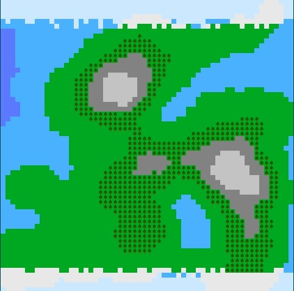
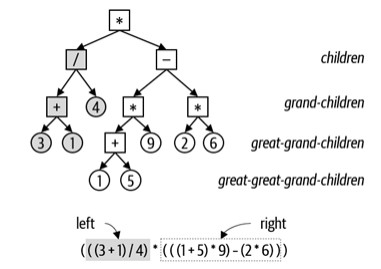

Designed entirely with Python. My asset visualizer allows the user to input assets with their ticker, share count, and cost basis to provide a total value based on the asset's up to date value.
Individual assets can be further investigated with 1-year graphs visible alongside SMA20 and SMA50 indicators. Lots of other asset metrics are displayed below the graph such as Dividend, PE, PS, and a myriad of others.
Demo:
Within a team of 5, analyzed rates of diabetes in the Pima Tribe in Arizona.
Cooperatively built data analysis through Python Libraries with a dataset provided by Kaggle. Simulated consultation via a presentation for the Bureau of Indian Affairs of Arizona with strategies to lower diabetes rates in the aforementioned tribe.
Presentation:
Developed an in-line replica of the Unix-based shell Bash in C. Implemented built-in functionality of cd, home, pwd, jobs, kill, history, exit, and echo.
Furthermore, linked libraries to implement other Bash commands as well as logical operators such as &&, ||, <<,>>, and &.
Developed in Python. This random terrain generator used a modified perlin noise heightmap generator to create 2d landscapes based on various variables such as: mountain peaks, oceans, lakes, forests, plains, and ice. Visuals developed in Adobe Photoshop.
Example Map:

Designed in Java. Turned normal expressions into a binary tree and solved by traversing the tree using operators and numbers as nodes.
Example Tree:

Within a team of 4, researched the correlation between waste & recycling processing plant location with the poverty rates of cities in the area. Formulated solutions for various US cities to implement to reduce pollution for healthier city environments